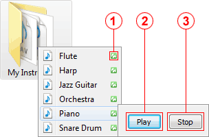

The InstantWave plug-in enables playback of WAV sound files. Whenever KO Approach encounters a WAV file, it displays a pictogram of a speaker next to the file's name. Highlighting the item will expand InstantWave's control pane:
Waveform pictogram
Indicates that the sound file can be played back by InstantWave.
Play button
Starts playback of the selected file. InstantWave will play a standard Beep if the audio file is invalid or corrupt.
Stop button
Stops the playback. It is usually not necessary to press this button as most WAV sounds are short and will finish playing back very quickly. However, occasionally you may come across a longer sound that you won't want to listen to till the end. InstantWave will also automatically stop playback when you select a different item.
Note: InstantWave does not support playback of sound files stored inside ZIP archives.